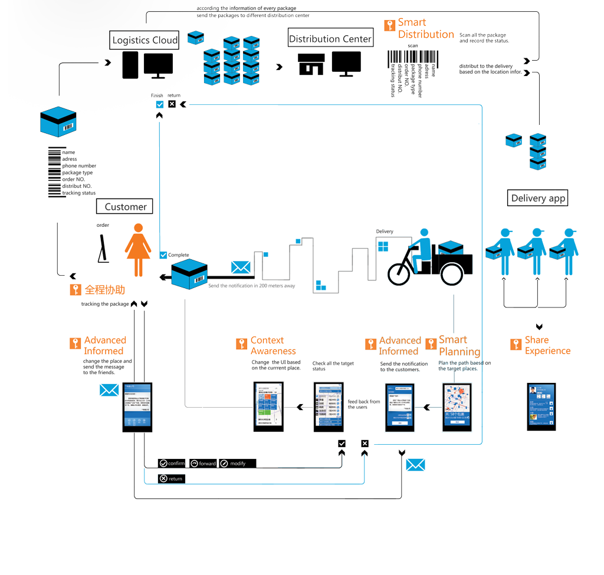

Flypackage
Smart Mobile Service for DeliveryOne person's project
2010.6-2011.6
Background
In recent years, the new-generation migrant workers have become a very important social group in modern societies in China. Many of them have landed in a job in the delivery business, which has relatively low entry barrier and is highly mobile. With the increasing popularity of online e-commerce, the logistics industry chain has been growing very rapidly in China, and the delivery business, as an important part of the logistics chain, has also received tremendous attention. While many developed countries have employed information technology to greatly improve the operational efficiency of their delivery systems, it is still at a rudimentary stage in China, where the entire process relies heavily on human efforts. As such, it is extremely valuable to design and implement a delivery service system, which can provide future disruptions using currently available technologies.
Design Process
Background Research
User Study (Shadow & Interview)
Find the design opportunity
Branding Design
Information Structure Design
Interaction Design
Uer Interface Design
I Followed a delivery for a whole day to watch how he delivered the packages in his zone, and talked with many delivery men when they were having a rest. Finally I got to know their delivery working system and find the problems in the circle. Then a new delivery mobile service was designed based on those user data I collected.
Information flow
Design Solution
I focus on the migrant workers in the delivery industry, and conducted intensive user studies and follow-ups, which shed insights on the prominent problems and needs from these workers. Based on these understandings, I have applied the service design concepts and interactive design methodology to design a mobile service for the delivery personnel, which embraces mature mobile technologies such as Location-Based Services (LBS), Radio Frequency Identifiers (RFID), Near Field Communication (NFC) and Augmented Reality (AR). I have developed a set of novel service feature and context-based user interaction solutions, which can be implemented over the smart mobile devices such as smartphones.